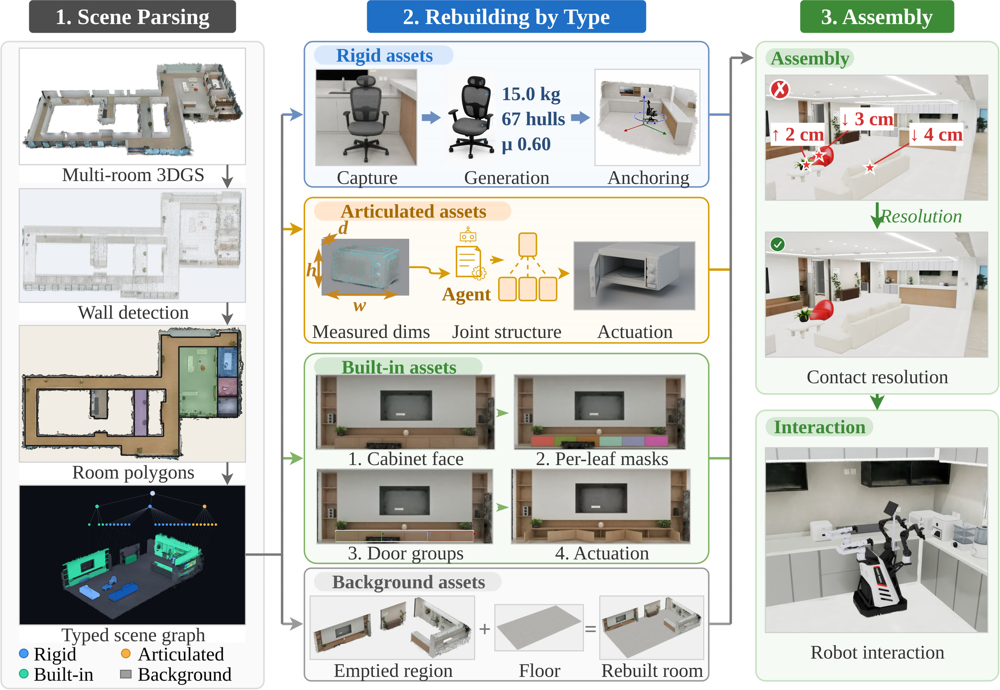

Reconstructed shape & convex decomposition.
Reconstructing Interactive Simulatable3D Scenes from Real Captures
Photorealistic capture and interactive simulation have advanced separately: a 3D Gaussian Splatting scan reproduces a room down to its reflections but cannot be touched, while a simulatable scene is authored by hand. RISC-3D closes that gap. From a multi-room 3DGS capture we recover the scene's structure, classify every object as rigid, articulated, built-in or background, reconstruct each class with the method its geometry demands, and resolve the result into a physically consistent scene.
The output is not a mesh dump but an MJCF scene with collision geometry, mass and friction, and driven joints — 161 bodies and 101 joints for the room shown here — which loads unmodified in both MuJoCo and Isaac Sim and supports robot manipulation out of the box.

Where every asset below came from: 2.6 million gaussians across the full storey capture, photoreal and completely inert.
Reconstructed shape & convex decomposition.
Part decomposition & recovered joints.
Wall-mounted cabinetry reconstructed in-place.
Reconstructed RISC-3D environments directly power closed-loop policy learning in simulation and zero-shot deployment in the real world.
Closed-loop mobile manipulation and articulated object interaction in Isaac Sim.
Zero-shot deployment of policies trained in the reconstructed simulation onto the physical robot.
@article{risc3d,
title = {RISC-3D: Reconstructing Interactive Simulatable 3D Scenes from Real Captures},
author = {TODO},
journal = {TODO},
year = {2026}
}